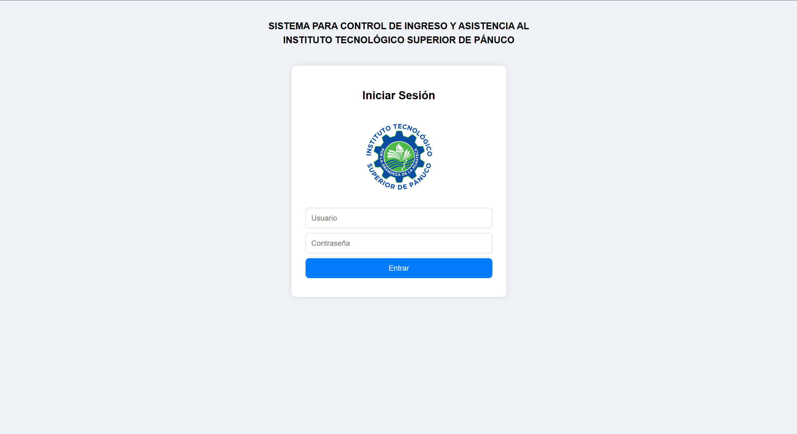
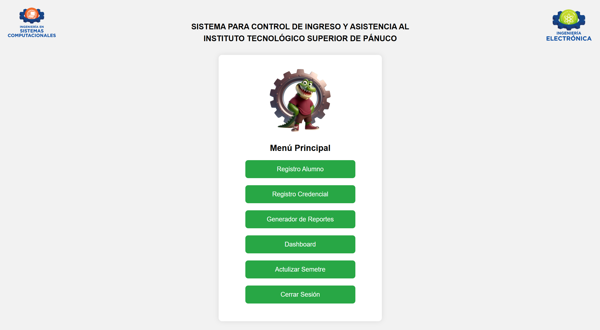
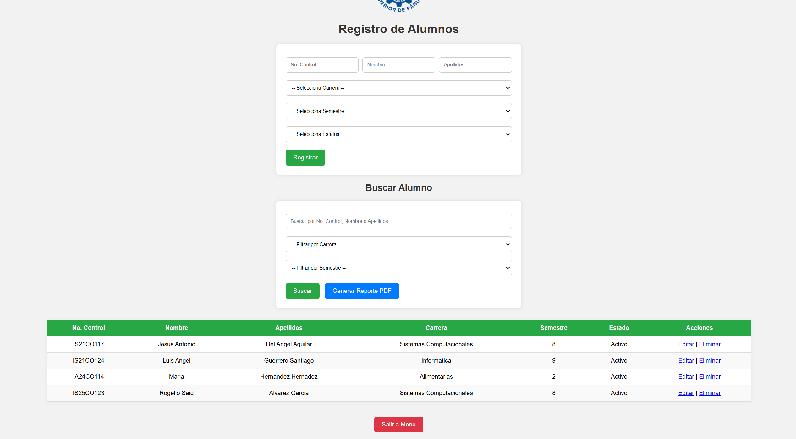
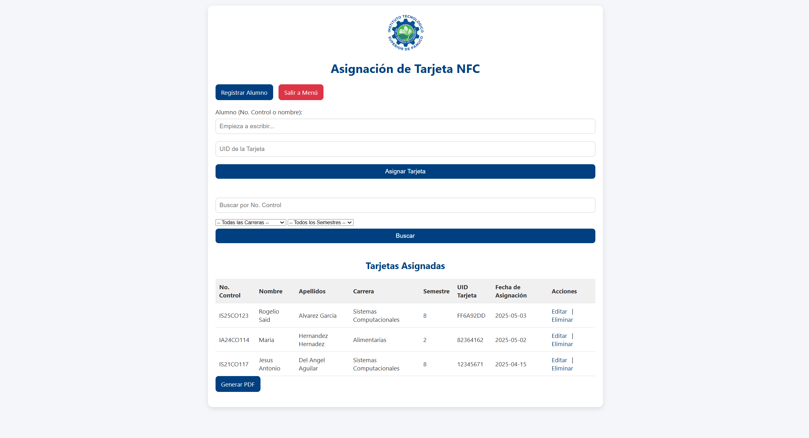
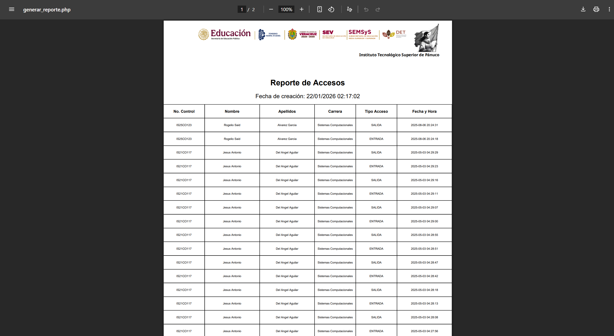
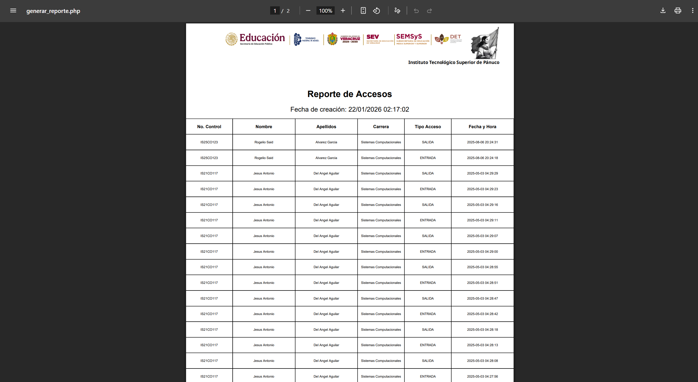
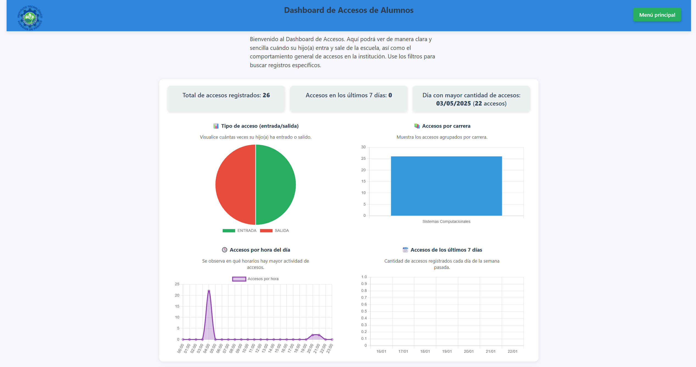
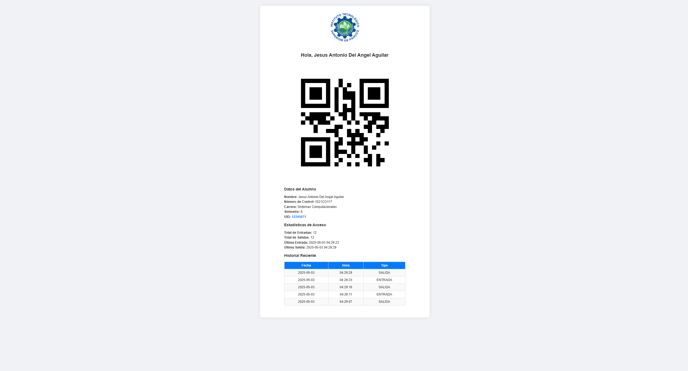

Sistema de Control de Ingreso y Asistencia
Proyecto: Sistema de Control de Ingreso y Asistencia
Institución: Instituto Tecnológico Superior de Pánuco
Este sistema fue desarrollado como solución integral para el control de acceso y asistencia en instalaciones educativas. El objetivo principal fue automatizar el registro de entradas y salidas, reducir el uso de métodos manuales y generar reportes confiables y en tiempo real.
- Contexto y necesidad: En muchas instituciones el control de asistencia se realiza de forma manual o mediante sistemas básicos. Este proyecto automatiza el registro, mejora la seguridad y permite análisis por carrera o alumno.
- Funcionalidades principales:
- Dashboard central para visualizar accesos y asistencia.
- Registro automático de entradas y salidas mediante QR.
- Generación de reportes PDF con TCPDF.
- Control de acceso físico mediante Arduino.
- Gestión de usuarios con permisos y roles.
- Base de datos normalizada en MySQL.
- Arquitectura del sistema: El sistema cuenta con una capa web (front-end + back-end) conectada a MySQL, y una capa física con Arduino para el control de acceso. La arquitectura se diseñó pensando en escalabilidad y seguridad.
- Proceso de desarrollo:
- Análisis de requisitos y definición de necesidades.
- Diseño y normalización de base de datos en MySQL.
- Desarrollo de interfaz web con HTML, CSS y JavaScript.
- Integración con Arduino y dispositivos de acceso.
- Generación de QR para registro desde estacionamiento.
- Pruebas en entorno real y validación de datos.
- Resultados: Automatización del control de acceso, reducción de errores manuales y generación de reportes precisos. El dashboard permite análisis rápido por carrera o alumno.
- Tecnologías utilizadas:
- HTML / CSS / JavaScript
- PHP (backend)
- MySQL
- TCPDF (PDF)
- Arduino
- Cableado de red y montaje de servidor
Capturas del sistema




 


